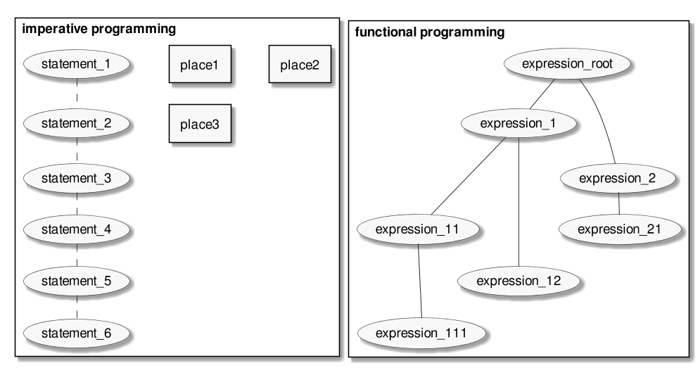

Functional programming:
What is it?

2020-04-11
The Value of Values
Value
- Immutable
- Semantically transparent
Places, variables and state
- memory
- file system
- database
- network service
- address book
Variable is a ref to a place where the value stored.
State is a union of all related places.
Email example
- 10 minute ago: andrewtropin@gmail.com
- 02 minute ago: andrey@trop.in
- 01 minute ago: andrew@trop.in
Value examples
Simple
2
"hello"
Complex
[3, 4]
Aggregated
{"a": ["b", 7]}
Information system
- Interacts with places
- Uses values
- Produces values
- Saves to places
- Supports Decision making
Imperative programming
Imperative factorial
int n = 23;
int f = 1;
int i = 1;
iter:
f = f * i;
i++;
if (i <= n)
goto iter;
print f;
More structure
int n = 23;
int f = 1;
int i = 1;
iter:
if (i <= n) {
f = f * i;
i++;
goto iter;
}
print f;
Move flow control
int n = 23;
int f = 1;
int i;
for (i = 1; i <= n;) {
f = f * i;
i++;
}
print f;
Procedural
int f;
int factorial(int n) {
int i;
for (i = 1; i <= n; i++) {
f = f * i;
}
}
int main() {
f = 1;
factorial(23);
printf("%d", f)
}
Sum up
- Statements changes the state
- Statements depends on the state
- Procedure is a collection of statements
Functional programming
Expressions
Something that can be evaluated and produce the value.
2 + 2
Expressions 2
2 + 2 * 3
(+ 2 (* 2 3))
Expressions evaluation
(+ 2 (* 2 3))
(+ 2 6)
8
Factorial expressions
(defn factorial [n]
(if (= 1 n)
1
(* n (factorial (- n 1)))))
(factorial 10)
;; => 3628800
Magic do expression
(do
(+ 2 2)
(* 3 5))
;; => 15
Functions

- In mathematical sense
- In CS sense
Function example 1
(defn figure->color [figure]
(if (or (= "triangle" figure)
(= "square" figure))
"red"
(if (= "rectangle" figure)
"yellow"
(if (= "polygon" figure)
"green"))))
(figure->color "rectangle")
;; => "yellow"
Function example 2
(def figure->color
{"triangle" "red"
"rectangle" "yellow"
"polygon" "green"
"square" "red"})
(figure->color "polygon")
;; => "green"
Procedures vs Functions

Pros and Cons
Pros
Your code is:
- safe
- concurrent
- actually reusable
- easy to decouple and test
- lazy and momizable
- describes business logic
Cons
- it's mindblowing
- maybe not so efficient
- you can't do anything practical with it
There is no VS
Function + Procedures
Both can be useful
Contacts
- andrew@trop.in
- tg: @tropinchannel
- github: @abcdw